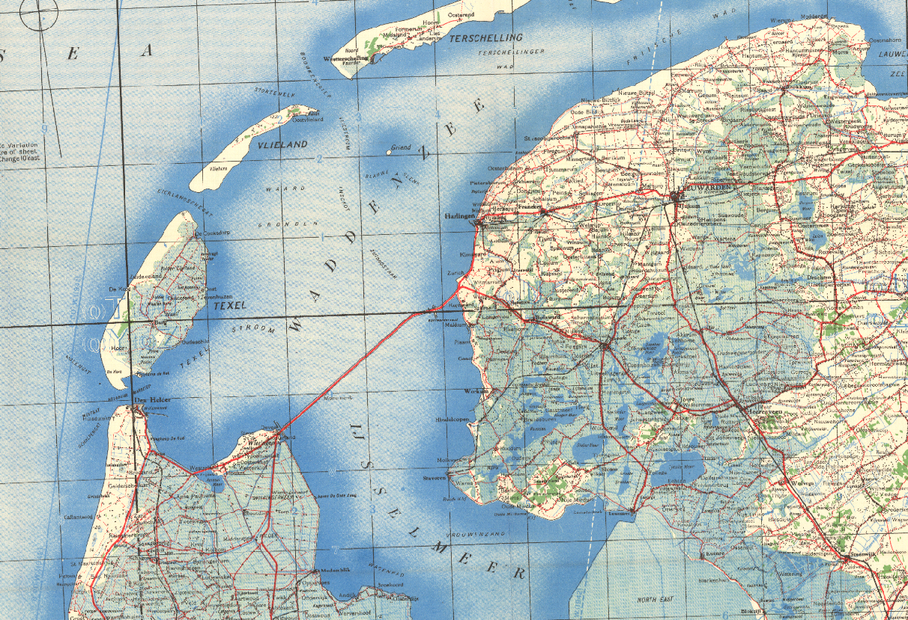
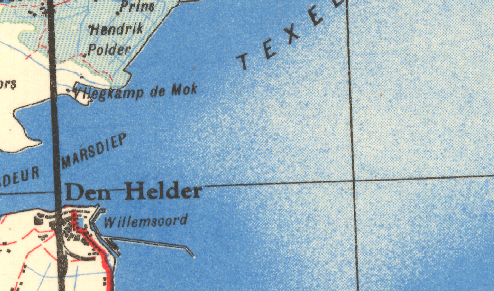

Styling Vector Tiles
By: Niene Boeijen
Niene Boeijen


Propedeuse Art Academy
MSc Geo Information Science
Internship Geo Web Visualization
Maptime Amsterdam & Utrecht
Web Cartographer
What the map can be
Edward, Frederieke, Niene & Steven
Geography, Geo-informatie science, Art Academy, Geo Media Design
What the map can be
We make interactive map and geo data visualizations
Our expertise is open {source; data; standards}
We combine cartography with web technology
This presentation:
All about visualization Tips & Tricks!
With 4 map examples!
Follow along!
So many links & Code examples!
 nieneb.github.io/styling_vector_tiles
nieneb.github.io/styling_vector_tiles
bit.ly/2Ro3tsz
Map 1
Paradijs in de Polder
> the app <Take-Away #1: Know your tiles
Easy understandable layers and naming
Uniform throughout all zoom levels and source data
Take-Away #2: a Polygon does not have to be a Polygon!!
Map 2
Take me to 1943!
> the app <What is a sprite?
sprite.json
sprite.png
MapboxNot only for icons!!
Fills, Symbols, background patterns
..special effects!
..we will have to make them by hand!
Make `sprite.json` by hand in text-editor
{
"iconname" : {
"width": 32,
"height": 32,
"x" : 0,
"y": 0,
"pixelRatio": 1
}
}
Make `sprite.png` with GIMP!
One image, or combined canvas!
Finding coordinates with the pointer dialog
Export as png
Inspiration


Final files:

Take-Away #3: Know your technology and change those defaults!
Map 3
Bevrijdingskaart.nl
> the app <Radom (handdrawn/printed) effects?
 Take-Away #4: Color Blender Tool https://meyerweb.com/eric/tools/color-blend/
No opacity
Take-Away #5: Draw like Bob Ross. Visually combine your layers
Transparant sprites

Take-Away #6: Background on top! www.transparenttextures.com
example jsonMap 4
Crafty map
> the app <What comes after styling?
Interactivity with JavaScript!

Take-Away #7: Combine those libraries!
turf.js
Advanced geospatial analysis for browsers
Creating a simple GeoJSON with Turf.js
var points = turf.randomPoint(25, {bbox: [-180, -90, 180, 90]})
Checking geometries with Turf.js
if (!turf.booleanPointInPolygon(point, poly)){
map.getSource('points').setData(drawRandomPoints());
};Take-Away #8: Use Map events
map.on("load", function(e) {
//Initialize Balloons!
};
map.on("moveend", function() {
//draw new balloons!
};
Seen the coffee stain in Take me to 1943 ?!
Alright. Fun.
"But I can't read those labels! Where are my reading glasses?"
Take-Away #9: Making a good map is more then only desinging the map
Questions?

Presentation made with: Reveal.js - Idyll - CodeSandbox - Giphy
Feedback? Let me know!
| niene@webmapper.net |
| @BNiene |
| NieneB |
| NieneB.nl |
| Niene Boeijen |
| volvo_343_dl_1980 |
Thank you!